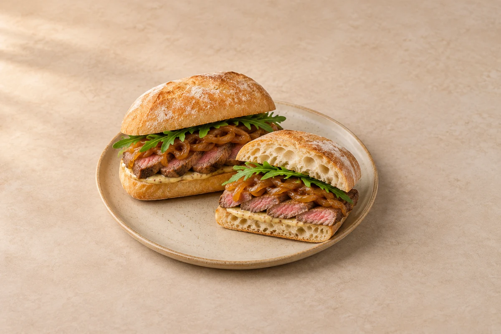

Lunches
Steak Ciabatta
Sliced steak, golden onions and rocket in crusty ciabatta with Dijon mayonnaise. Serves 2.
Time to allow: 35 min total
Prep10 mins
Cook25 mins
people
Ingredient quantities update automatically

Ingredients
Ingredients
Method
Cook the onions
Melt the butter in a frying pan over a medium-low heat. Add the onion and a small pinch of salt. Cook for 15–20 minutes, stirring regularly, until soft and golden. Add the balsamic vinegar and cook for 1 minute, then set aside.Make the Dijon mayonnaise
Mix the mayonnaise and Dijon mustard in a small bowl.Sear the steak
Pat the steak dry, rub with the olive oil and season. Heat a heavy frying pan until hot. Sear a 2cm steak for approximately 2–3 minutes per side for medium-rare, or longer to your preference. Timing depends on thickness and pan heat.Rest and slice
Rest the steak on a board for 5 minutes, then slice thinly across the grain. Stir any resting juices into the onions.Toast the bread
Split the ciabatta rolls and toast their cut sides in the warm pan until lightly golden.Assemble
Spread with Dijon mayonnaise, then add the rocket, sliced steak and golden onions. Close the rolls and serve straight away.
Tips & leftovers
Storage & leftovers
Keep the steak and onions in separate covered containers in the fridge and use within 48 hours of cooking. Store the Dijon mayonnaise and rocket separately; toast and fill the bread just before eating.
Freezing
Freeze cooled steak and onions in separate labelled portions for up to 2 months for best quality. Freeze ciabatta separately if suitable. Add fresh rocket and mayonnaise after defrosting; steak may be less tender after freezing.
Reheating
Cold sliced steak works well in a freshly toasted roll. If reheating, heat the steak and onions once in a covered pan with a splash of water until steaming hot throughout; the steak will cook beyond medium-rare. Add rocket and mayonnaise afterwards.
Substitutions
Use a baguette or sourdough instead of ciabatta. Rump and sirloin both work; slice across the grain. Swap rocket for watercress or baby spinach, and use wholegrain mustard if you prefer a milder texture.
Keeping leftovers safe
Cool cooked leftovers in small portions and refrigerate within 2 hours. Keep the fridge at 0–5°C and the freezer around −18°C. Freeze suitable leftovers promptly. Defrost fully in the fridge and use within 24 hours. Reheat only once, until steaming hot all the way through. Follow any shorter use-by or opened-pack instructions; using older cooked ingredients does not restart their storage time.
Food-safety guidance: Food Standards Agency: chilling and freezing · reheating leftovers.